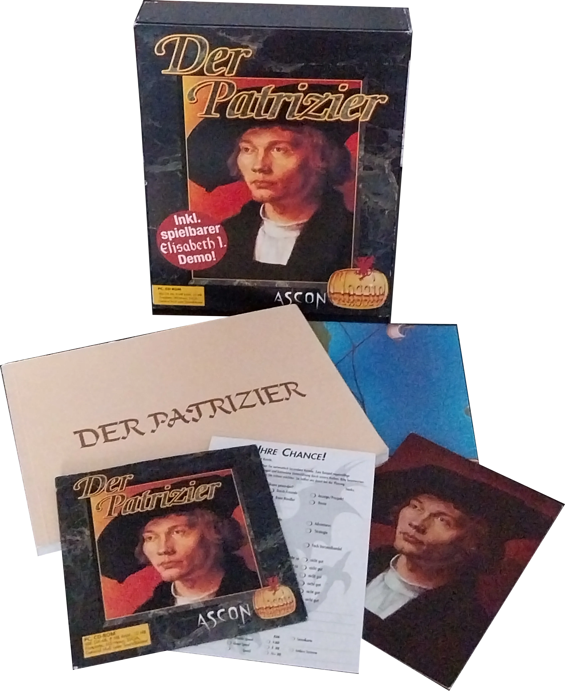
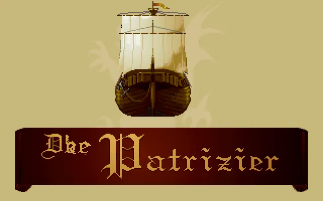
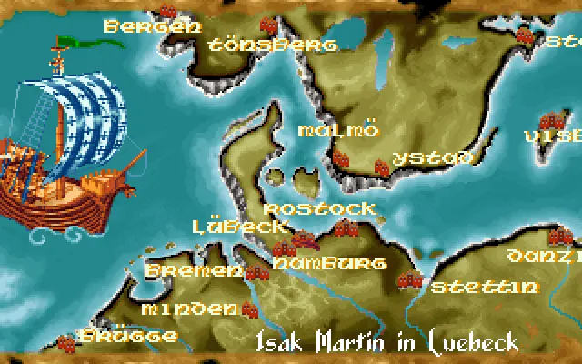
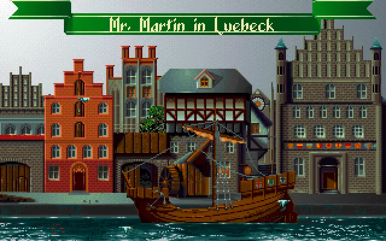

Entwickler: Triptychon Software
Publisher: Ascon
Genre: Wirtschaftssimulation
Plattform: DOS / PC
Erscheinungsjahr: 1992
Der Patrizier versetzt den Spieler in die Zeit der Hanse. Durch geschickten Handel, den Aufbau einer Flotte und politisches Geschick arbeitet man sich vom einfachen Kaufmann bis an die Spitze der mächtigsten Handelsstädte empor.




Der Patrizier überzeugt bis heute mit seiner ruhigen Spielweise, einer tiefen Wirtschaftssimulation und einer Atmosphäre, die auch Jahrzehnte später noch einzigartig wirkt.